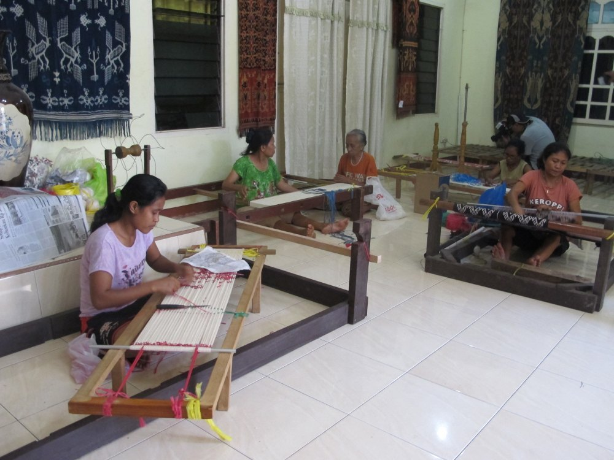
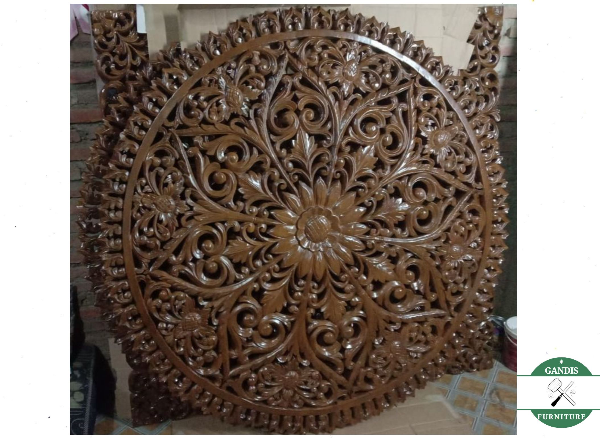
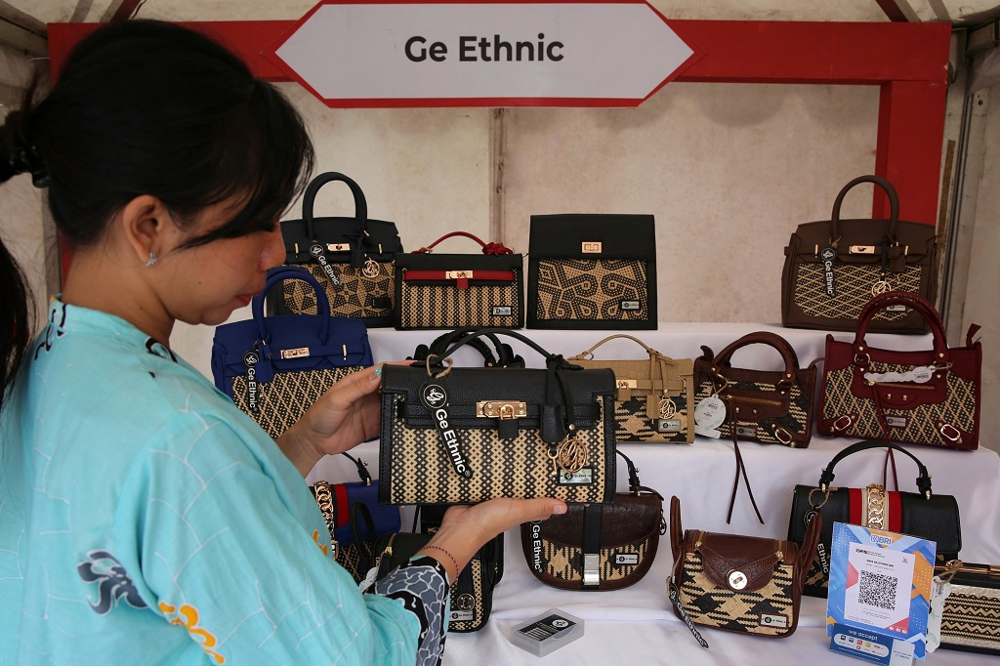

Tenun Ikat NTT
Kain tenun bermotif khas Nusa Tenggara Timur yang dibuat menggunakan pewarna alami dan alat tenun bukan mesin (ATBM).
Rp 450.000

Kain tenun bermotif khas Nusa Tenggara Timur yang dibuat menggunakan pewarna alami dan alat tenun bukan mesin (ATBM).
Rp 450.000

Hasil hiasan dinding dan pahatan kayu jati asli dari sentra ukir Jepara dengan detail yang sangat rinci.
Rp 350.000

Tas wanita dari olahan serat rotan pilihan, tahan lama dan cocok digunakan untuk keperluan kasual.
Rp 180.000